MVC使用CodeFirst技術實現基礎連結資料庫 Create Model
1.新增名為MyGuestBook專案並選擇MVC核心
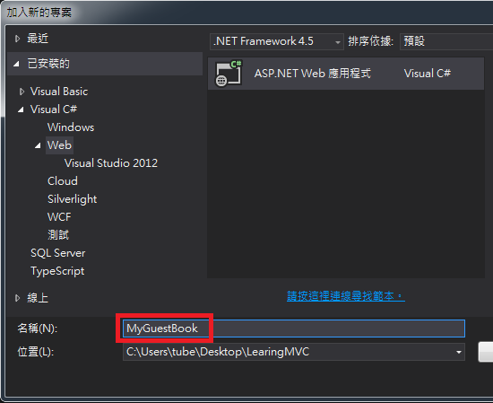
2.於Models資料夾新增ADO.NET實體資料模型並使用「空的CodeFirst模型」
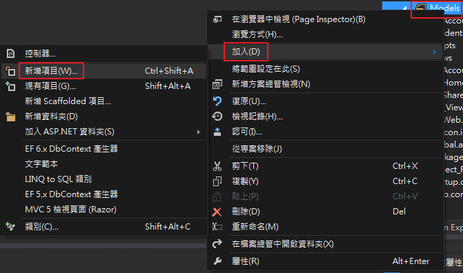
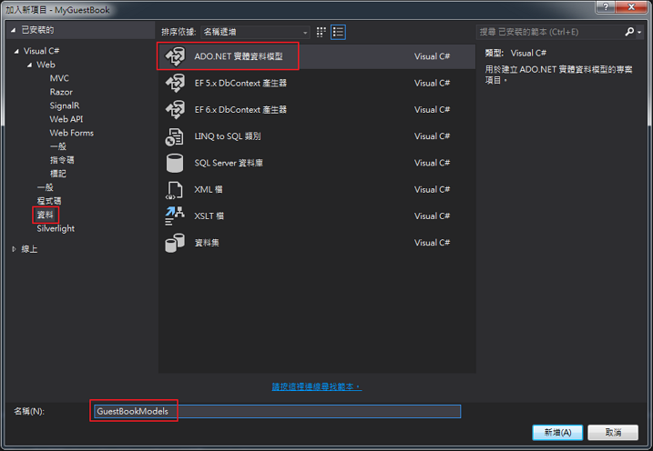
3.新增後會在Models資料夾內自動產生「GuestBookModels.cs」檔
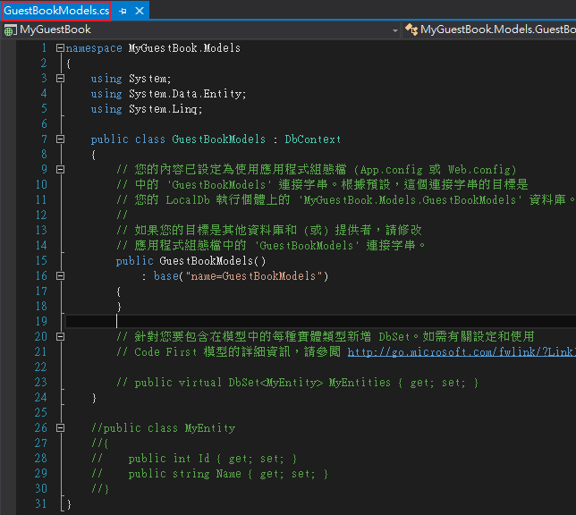
4.在「GuestBookModels.cs」檔新增POCO(Plain Old CLR Object)類別
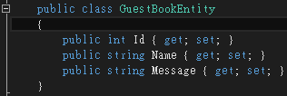
public class GuestBookEntity
{
public int Id { get; set; }
public string Name { get; set; }
public string Message { get; set; }
}
5.在「GuestBookModels.cs」檔新增DataContext(Code First中的上下文物件)
在GuestBookModels加入GuestBookeEntity「資料表」
public virtual DbSet<GuestBookEntity> MyEntities { get; set; }
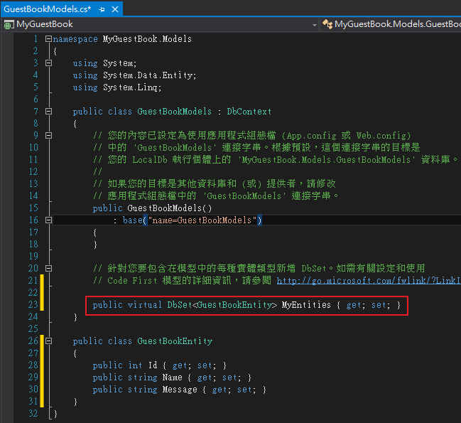
於「GuestBookModels.cs」檔新增Model初始化
Database.SetInitializer(new CreateDatabaseIfNotExists<GuestBookModels>());
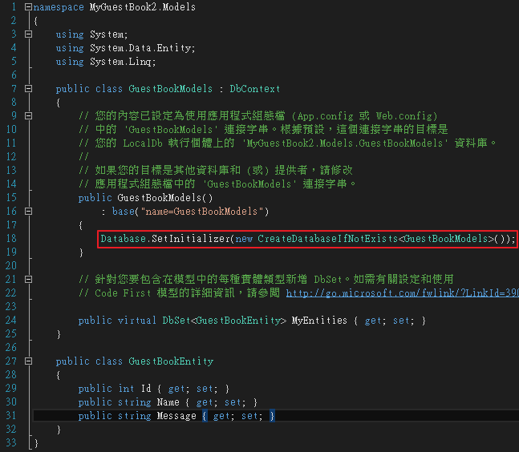
6.於Controller的Index動作new GuestBookModel並將該Model裡的GuestBookEntiy類別的結果傳給View
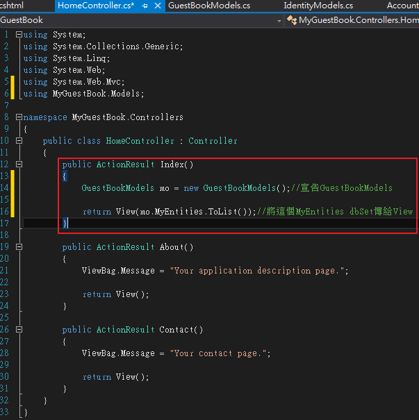
7.於View則要接收從Controller傳來的GuestBookEntiy型別
在檔案開頭要宣告@model IEnumerable<MyGuestBook2.Models.GuestBookEntity>
此時model為集合，可用來顯示Table欄位@Html.DisplayNameFor(model => model.Id)
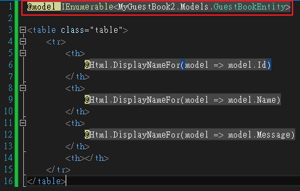
8.結果如下，可以連結資料庫顯示欄位名稱
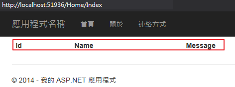
---------------------------------------------------------------------------------------------------------------
補充1：Code first與Database first的DbContext的差別
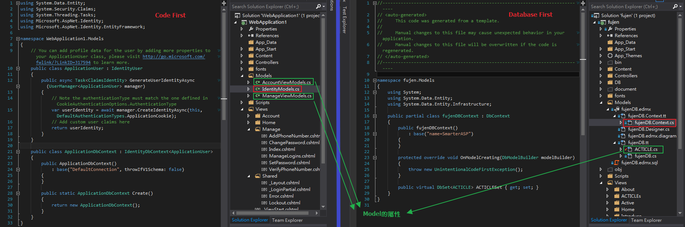
補充2：在一個繼承DbContext的類別中如下
public class GuestBookModels : DbContext
{
// 您的內容已設定為使用應用程式組態檔 (App.config 或 Web.config)
// 中的 'GuestBookModels' 連接字串。根據預設，這個連接字串的目標是
// 您的 LocalDb 執行個體上的 'MyGuestBook2.Models.GuestBookModels' 資料庫。
//
// 如果您的目標是其他資料庫和 (或) 提供者，請修改
// 應用程式組態檔中的 'GuestBookModels' 連接字串。
public GuestBookModels()
: base("name=GuestBookModelsConnection")
{
Database.SetInitializer(new CreateDatabaseIfNotExists());
}
// 針對您要包含在模型中的每種實體類型新增 DbSet。如需有關設定和使用
// Code First 模型的詳細資訊，請參閱 http://go.microsoft.com/fwlink/?LinkId=390109。
public virtual DbSet MyEntities { get; set; }
}
有一條字串為base("name=GuestBookModelsConnection")，該用途為指定ConnectionName將會對應到
MVC專案第一層的web.config裡的ConnectionName部分內容如下